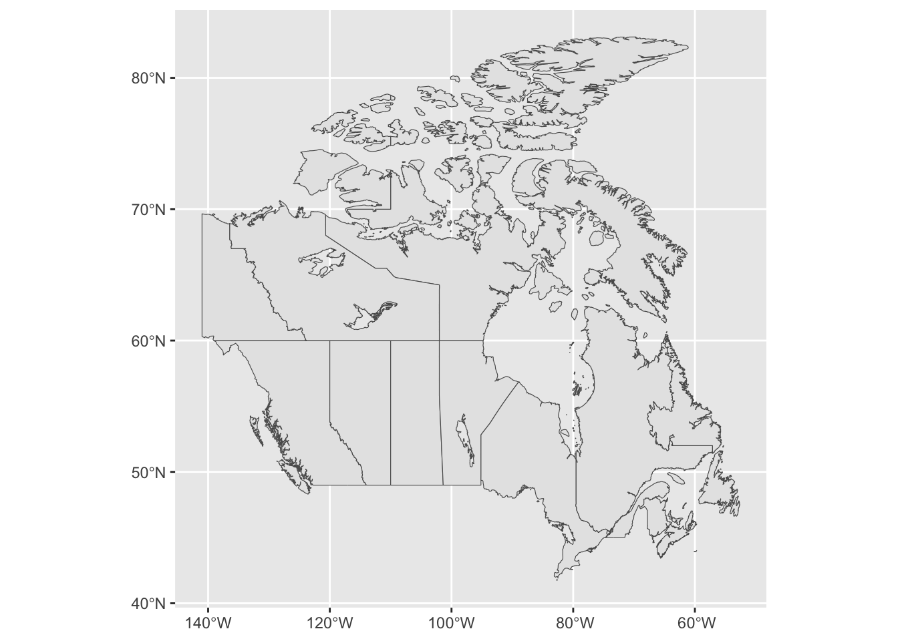
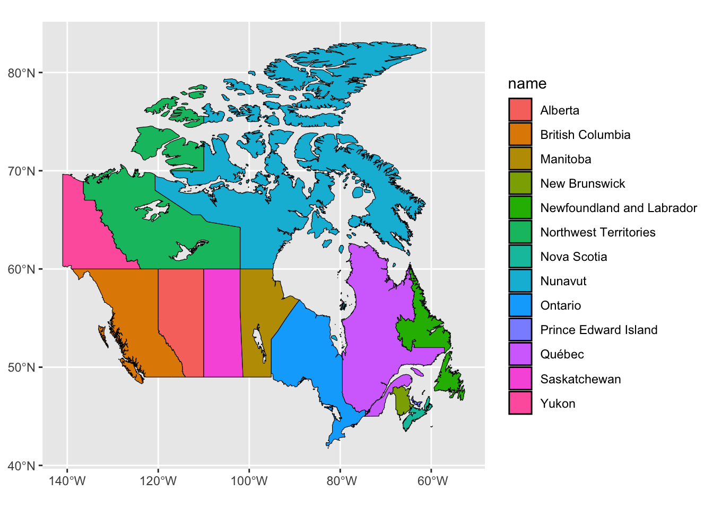
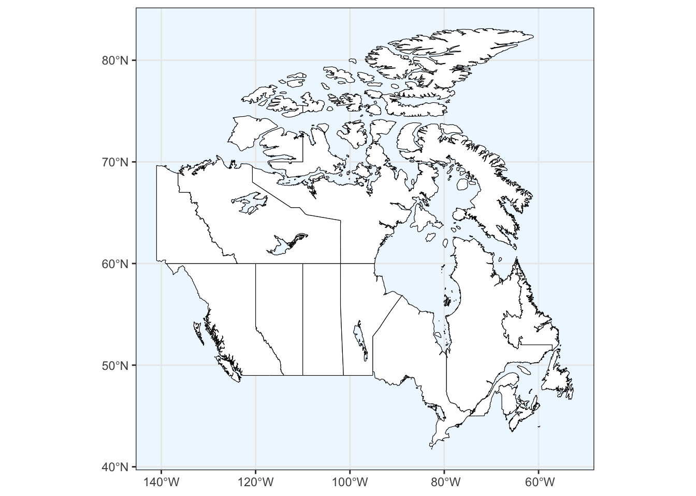
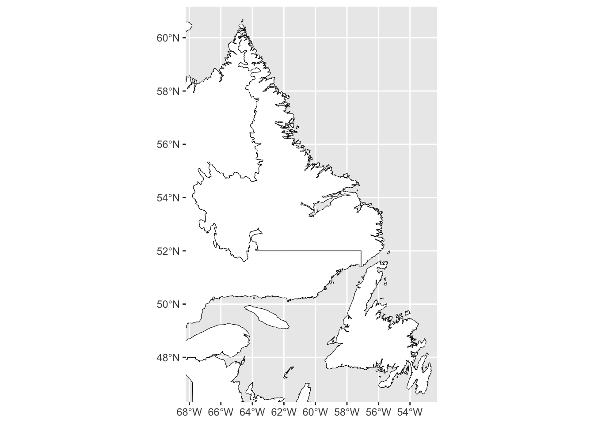
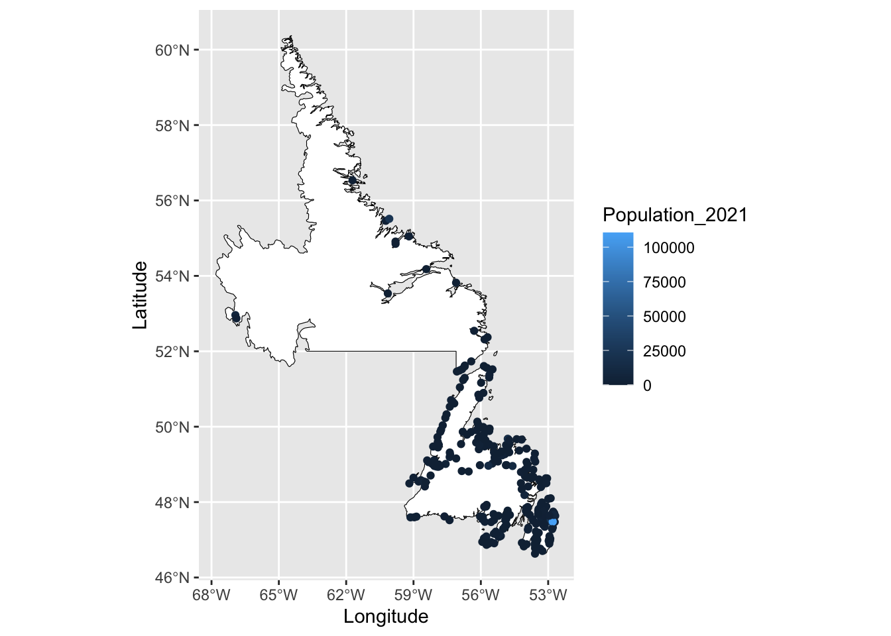

16 Making maps
16.1 Introduction
Maps are a great tool for presenting data in a simplified and visually appealing way. Typically, maps are created using GIS (Geographical Information System) software such as ArcGIS or QGIS, however in recent years R has developed many packages that can process and present spatial data. Drawing maps in R provides reproducible and flexible code that allows us to customize each map for a specific audience or purpose.
In GIS, there are a few key spatial elements that we must understand to build a map:
- Points: Specific locations with a single pair of coordinates (e.g., latitude and longitude) such as a city or town.
- Lines: Linear shapes that are made of connected point data such as roads or rivers. Lines use an ordered set of coordinates.
- Polygons: Closed shapes made of connected lines such as country or provincial/territorial borders. Polygons also have an ordered set of coordinates but the start and end point should have the same coordinates.
Each of these elements can be added as their own layer when building map.
16.1.1 Required packages
This tutorial requires several different packages, make sure you have the following ones installed before continuing. You will only need to do this once.
Plotting Packages
Spatial Packages
Base Map Packages
install.packages("rnaturalearth")
install.packages("rnaturalearthdata")
install.packages("rnaturalearthhires")
## If you have trouble installing the above packages, you can try this instead
install.packages("devtools")
devtools::install_github("ropensci/rnaturalearthdata")
devtools::install_github("ropensci/rnaturalearthhires")16.2 Creating maps using ggplot2 and sf
We can now build off of our ggplot knowledge to build maps in R. We will also need to install the package sf. sf provides a standardized way to work spatial vector data (i.e., points, lines, and polygons) by encoding the data as “simple features”. Simple features also keep any associated data as a data.frame, which allows us to change the aesthetic of each feature when working with ggplot.
To build our example map, we will be using data from the rnaturalearth package as well as the associated data packages rnaturalearthdata and rnaturalearthhires.
Once we have loaded these packages we can use the function ne_states() to select a map of Canada, as well as all of the provincial and territorial boundaries. Note: we must set returnclass = "sf" to make sure the output is a “simple feature”.
## [1] "sf" "data.frame"Using the function class tells us that the object canada_map is both a sf and a data.frame.
We can now plot our base map using ggplot() and adding a layer called geom_sf() where we specify the data we will be using.

16.3 Changing map colours
We can now start to customize our map, first by changing the colours. To change the colour of the borders we specify this using colour =, and to change the colour of the interior, we can specify this using fill -. Note: we set these values outside of the aesthetic (aes()) because we want to apply them to the entire object of canada_map.
We can also set the fill inside of aes() if we want it to be based on values found within the dataframe. For example, we can set the fill by the name of each Canadian province or territory.

If we instead wanted to highlight one province, for example Newfoundland and Labrador, we again set this outside of aes(). We also will use an ifelse() statement. In the code below, this statement can be interpreted as “if the name from our dataframe matches Newfoundland and Labrador return the colour blue, else return the colour white.
ggplot() +
geom_sf(data = canada_map, colour = "black",
fill = ifelse(canada_map$name == "Newfoundland and Labrador", 'blue', 'white'))Lastly, we can change the background fill to the map using theme elements. The layer theme_bw() will first set a black and white theme for the map, and can then alter the fill by setting panel.background.
ggplot() +
geom_sf(data = canada_map, colour = "black", fill = "white") +
theme_bw() +
theme(panel.background = element_rect(fill = "aliceblue"))
16.4 Projections
The Earth exists in three-dimensions but, other than globes, most representations of the earth, such as maps, are two dimensional. A map projection is the process of representing Earth’s surface in two dimensions using a set of mathematical transformations. However, the Earth’s surface cannot be flattened without distorting at least one geometrical property, such as area, shape, and distance. You cannot accurately represent all of these properties simultaneously therefore, it is important to select a projection that has the most suitable properties for that the mapping situation.
Projections in R can be specified using Well Known Identifier (WKID) codes or PROJ.4 strings. WKID codes are numeric identifiers of projections and are defined using either the ESPG or ESRI system. More information can be found following the links in the Additional Reading section.
We will use instead use a PROJ.4 string, which specifies the complete set of projection parameters including the ellipse, datum, and units that define a particular coordinate reference system (CRS). The PROJ.4 string for any given CRS can be found here: https://spatialreference.org.
For example, maps of Canada often use the Lambert Conformal Conic projection, which helps preserve both relative shape and direction. We will first copy the entire string from the website and save it as an object in R, which we will call can.lcc. We can then specify that we want to use this projection in for our map by adding a layer called coord_sf() and setting our CRS as can.lcc.
can.lcc <- "+proj=lcc +lat_1=49 +lat_2=77 +lon_0=-91.52 +x_0=0 +y_0=0 +datum=NAD83 +units=m +no_defs"
ggplot() +
geom_sf(data = canada_map, colour = "black", fill = "white") +
coord_sf(crs = can.lcc)Compared to any of the maps prior to this, you will notice that the latitude and longitude grid have become conical and that the shape and size of the provinces and territories have been altered.
16.5 Map Extent
We may want to map a specific area, such as the province of Newfoundland and Labrador rather than the entirety of Canada. We can accomplish this by defining by a set of bounding coordinates that specify the area of the map, also called the “extent”. We can specify the coordinate extent by setting the xlim() and ylim() values within the geom_sf() layer.
ggplot() +
geom_sf(data = canada_map, colour = "black", fill = "white") +
coord_sf(xlim = c(-67.5, -53), ylim = c(47, 60.5))
Alternatively, we can subset the Canada map by selecting that row of data from our data.frame and saving it as a new object. We can then map just the province without any additional borders.
map_nl <- canada_map[canada_map$name == "Newfoundland and Labrador",]
ggplot() +
geom_sf(data = map_nl, colour = "black", fill = "white")Lastly, we can specify the values we want in our x or y axes by setting breaks in the data. For example, we can reduce the number of longitude values included by setting scale_x_continuous.
16.6 Mapping points
We can add layers to our base map using additional geom functions in the same way that we would for any ggplot item. For points, we would use the function geom_point() and specify the coordinates as the x and y values within aes(). For this example, we will be mapping the populations of towns across Newfoundland and Labrador using the 2021 census report (Statistics Canada. Table 98-10-0002-01 Population and dwelling counts: Canada and census subdivisions (municipalities)).
Once we have our data, we will use the same base map that we used prior, and add the geom_point() layer. Note that we have also specified the colour of the points to be based on the 2021 population of the town/city and that we have done so within the aes().
ggplot() +
geom_sf(data = map_nl, colour = "black", fill = "white") +
geom_point(data = nl.cities, aes(x = Longitude, y = Latitude, colour = Population_2021)) +
scale_x_continuous(breaks=seq(-68, -52, 3))
This map doesn’t provide a lot of information about the population sizes in NL since most towns have fewer than 25 000 people. To create a more meaningful representation of our data, we can change the scale and colour.
One option is to add a layer using the function scale_color_viridis_c(), which provides a range of colour blind friendly palettes. We will just use the default option in this example.
We can also scale the data by specifying the transformation we would like to use; in the example below, we will use the log10 transformation, which returns the base 10 logarithm of a number. Note that this transformation is for the colour scale only and it will not alter the values of our data. The legend will now provide a wider range of colours for values between 10 and 10 000.
Lastly, we will change the name of the legend within the labs() function.
ggplot() +
geom_sf(data = map_nl, colour = "black", fill = "white") +
geom_point(data = nl.cities, aes(x = Longitude, y = Latitude, colour = Population_2021)) +
scale_x_continuous(breaks=seq(-68, -52, 3)) +
scale_color_viridis_c(trans = "log10") +
labs(colour = "Population 2021")Other spatial elements such as lines or polygons can be added in the same way using the geom_line() or geom_polygon() functions.
16.7 Scale bar and north arrow
Scale bars provide a visual representation of distance and feature size on the map. A scale bar is a line or bar divided into parts.
To add a scale bar or north arrow, we will need to load the R package ggspatial.
We use annotation_scale() to add a scale bar to the map. The location can be stated as "tr" for the top right corner, "bl" for bottom left corner, etc. The argument width_hint sets the size of the scale bar as a proportion of the map width. For example width_hint = 0.5 will return a scale bar that is half the width of the map.
ggplot() +
geom_sf(data = map_nl, colour = "black", fill = "white") +
scale_x_continuous(breaks=seq(-68, -52, 3)) +
annotation_scale(location = "tr", width_hint = 0.5)A north arrow indicates the orientation of the map inside the frame. Using the argument annotation_north_arrow(), we can specify the orientation using which_north. Options include “grid”, where the north arrow always pointing up and “true”, which always points to the north pole. We can also define the size of the north arrow using height and width, as well as the style and location.
ggplot() +
geom_sf(data = map_nl, colour = "black", fill = "white") +
scale_x_continuous(breaks=seq(-68, -52, 3)) +
annotation_scale(location = "tr", width_hint = 0.5) +
annotation_north_arrow(location = "tl", which_north = "true",
height = unit(1, "cm"), width = unit(1, "cm"),
style = north_arrow_fancy_orienteering)16.8 Finalizing the map
You may need to save the map for a report, presentation, or thesis. We will combine each of the previous steps into one map below, which we will assign as the object named final. These previous steps include:
- Plot a base map of Newfoundland and Labrador
- Add points representing the population size of towns/cities in Newfoundland
- Add a scale bar and north arrow
- Set the background colour to blue
In addition, we will move the legend inside the map margins by defining legend.position within the theme layer.
final <- ggplot() +
geom_sf(data = map_nl, colour = "black", fill = "white") +
geom_point(data = nl.cities, aes(x = Longitude, y = Latitude, colour = Population_2021)) +
scale_x_continuous(breaks=seq(-68, -52, 3)) +
scale_color_viridis_c(trans = "log10") +
labs(colour = "Population 2021") +
annotation_scale(location = "tr", width_hint = 0.5) +
annotation_north_arrow(location = "tl", which_north = "true",
height = unit(1, "cm"), width = unit(1, "cm"),
pad_x = unit(0.25, "cm"), pad_y = unit(0.25, "cm"),
style = north_arrow_fancy_orienteering) +
theme_bw() +
theme(panel.background = element_rect(fill = "aliceblue"),
legend.position = c(0.85, 0.75), legend.background = element_rect(fill = "transparent"),
legend.title = element_text(size = 10, face = "bold"))
finalWe may also want to create an inset map, which shows the location of the main map in the context of a larger area. For example, we can use the larger Canadian map we made previously, with Newfoundland and Labrador highlighted. We will assign this map as the object inset. Reminder, the previous steps included:
- Using an
ifelsestatement to colour Newfoundland and Labrador blue and the remainder of Canada white - Reprojected the map using the Lambert Conformal Conical projection
- Set the map theme and changed the background colour
Now we will also add a scale bar to our inset map using annotation_scale() and remove the white background by setting plot.background = element_blank(). We will also change the map theme to theme_void() to remove the latitude and longitude and help simplify the map inset.
inset <- ggplot() +
geom_sf(data = canada_map, colour = "black",
fill = ifelse(canada_map$name == "Newfoundland and Labrador", 'blue', 'white')) +
coord_sf(crs = "+proj=lcc +lat_1=49 +lat_2=77 +lon_0=-91.52 +x_0=0 +y_0=0 +datum=NAD83 +units=m +no_defs") +
annotation_scale(location = "bl", width_hint = 0.25) +
theme_void() +
theme(panel.background = element_rect(fill = "aliceblue", size = 1),
plot.background = element_blank())## Warning: The `size` argument of `element_rect()` is deprecated as of ggplot2 3.4.0.
## ℹ Please use the `linewidth` argument instead.
## This warning is displayed once every 8 hours.
## Call `lifecycle::last_lifecycle_warnings()` to see where this warning was
## generated.Lastly, we will add inset the inset to the main map using the cowplot package. We specify which is the main map using ggdraw and add the inset with a second function called draw_plot. Within draw_plot we define the size of the inset with width and height, as well as the location within the main map margins using x and y.
16.8.1 Exporting your map
You can now export your map to use for a report, presentation, etc. One option is to use the method outlined in Chapter 10.7. However, we can also use the function ggsave(). This will allow us to name our map as well as set the file format (.PNG, .JPEG, .TIFF), size (width and height in inches), and image resolution (dpi) when exporting the map.
16.9 Additional Reading
- https://bookdown.org/ededeban/ConsBioMap/
- https://www.earthdatascience.org/courses/earth-analytics/spatial-data-r/understand-epsg-wkt-and-other-crs-definition-file-types/
- https://pro.arcgis.com/en/pro-app/2.7/help/mapping/properties/coordinate-systems-and-projections.htm
- https://cran.r-project.org/web/packages/sf/vignettes/sf1.html